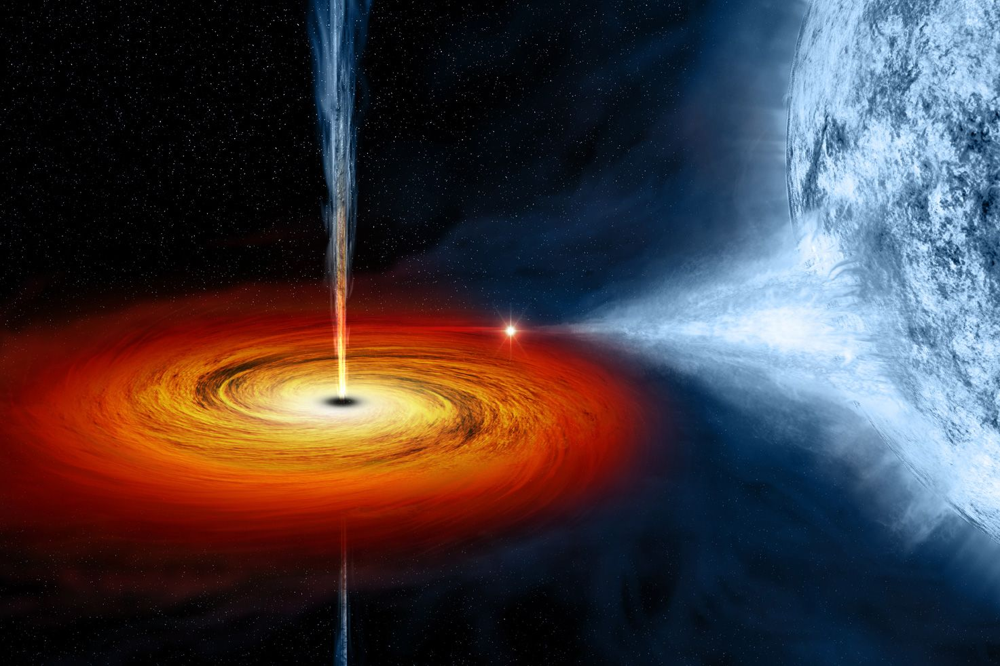

Black Hole
A black hole is a region in space where gravity is so strong that nothing, not even light, can escape its gravitational pull. The boundary surrounding a black hole is called the event horizon. Once anything, including light, crosses this boundary, it is pulled inexorably toward the center of the black hole—a point of infinite density called a singularity.
The formation of black holes is generally associated with massive stars. When a massive star exhausts its nuclear fuel, it undergoes a supernova explosion. If the remaining core mass after the explosion is above a certain threshold (about 2.5 to 3 solar masses), gravity overwhelms all other forces, causing the core to collapse into a singularity, forming a black hole.
Formation of Black Holes:
- The core collapses under gravity's pull, and the outer layers are expelled in a powerful explosion known as a supernova.
- The remaining core contracts further, leading to the formation of a dense object.
- If the remaining core mass surpasses the Chandrasekhar limit (approximately 2.5 to 3 solar masses), gravity becomes so intense that it overcomes all other forces, and the core collapses to a point of infinite density—a singularity.
- The region around the singularity where escape is impossible is the event horizon.
- Once an object crosses the event horizon, it is inevitably drawn toward the singularity.
Role in the Universe:
- As matter falls into an accretion disk around a black hole, it releases energy in the form of X-rays and other electromagnetic radiation. This process makes some black holes detectable by observing the radiation emitted by the infalling material.
- Supermassive black holes, found at the centers of galaxies, are believed to play a crucial role in the evolution of galaxies. Their gravitational influence can affect the distribution and movement of stars within a galaxy.
- The merger of two black holes produces ripples in spacetime called gravitational waves. Detection of gravitational waves has opened a new era in observational astronomy, allowing scientists to study events that were previously undetectable.